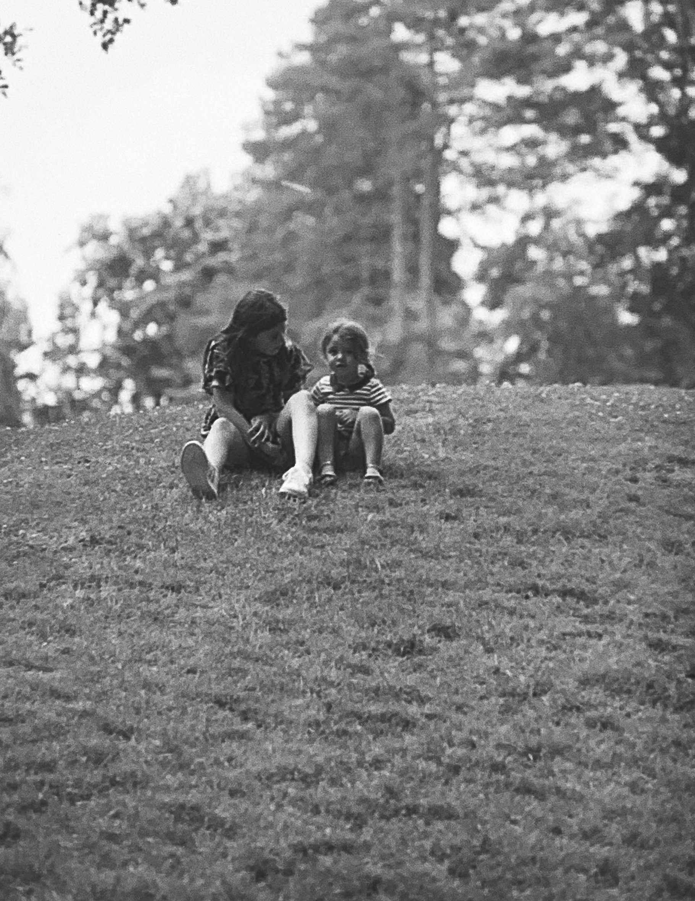
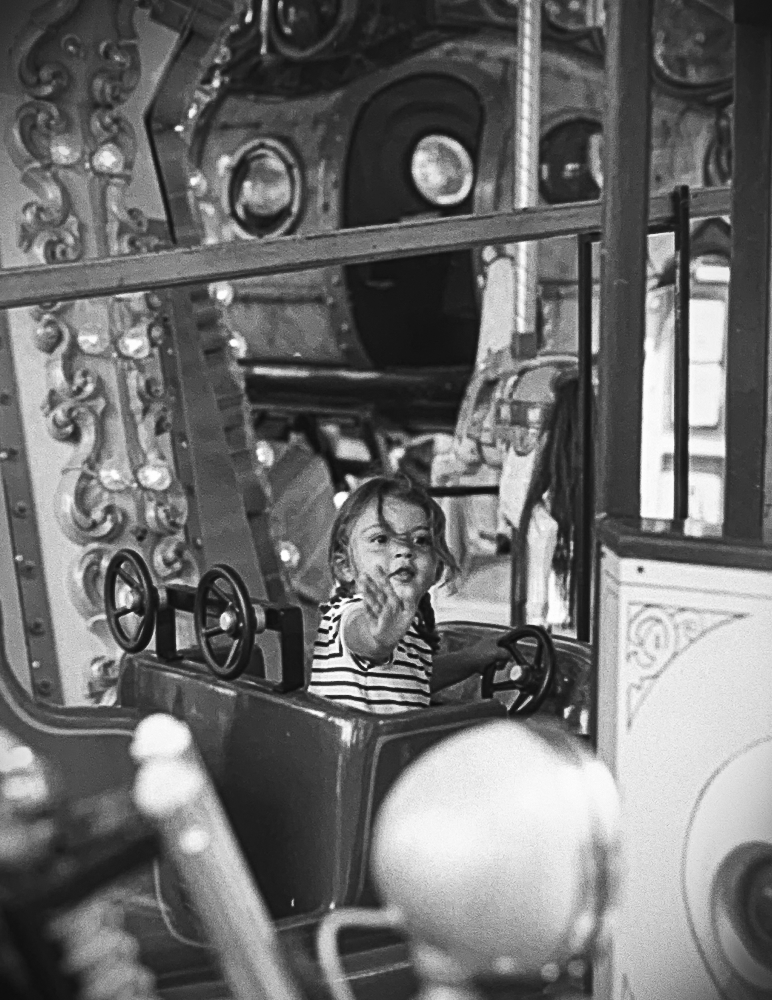
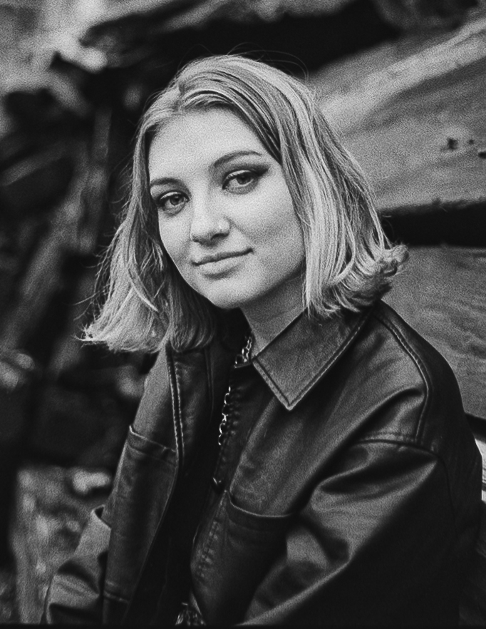
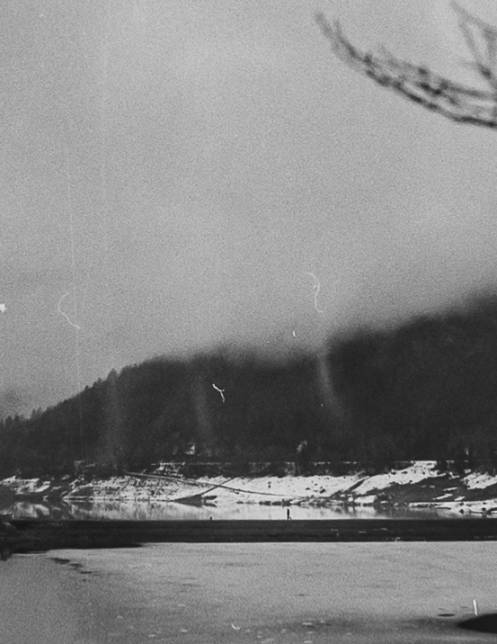
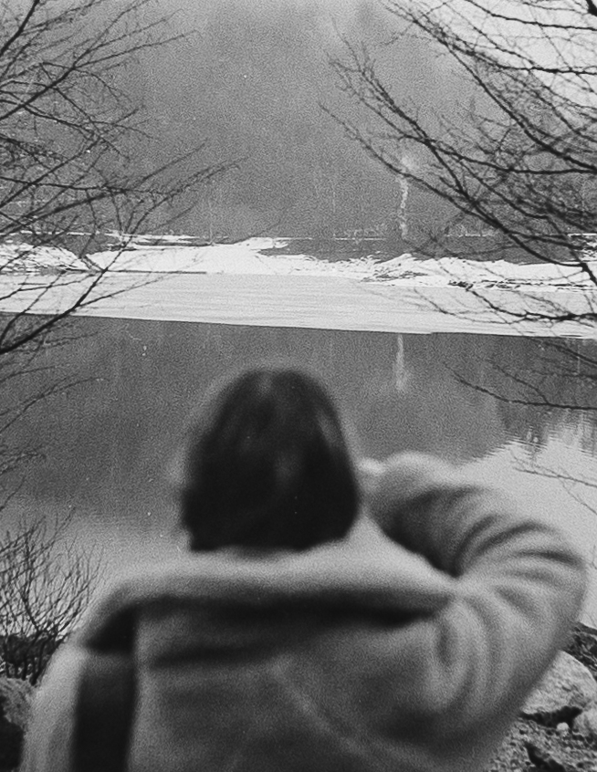

Numérique
Analogique
Analogique

small talks
à la découverte des nouveaux élements.
Olympus OM-20 | Olympus Zuiko 135mm F3.5 | Kodak T-max 400
26/06/2021
47°43 N | 7°20 E

coucou
En tournoyant dans ce manège.
Olympus OM-20 | Olympus Zuiko 135mm F3.5 | Kodak T-max 400
26/06/2021
47°43 N | 7°20 E

grainy days
Par tout les temps.
Olympus OM-20 | Olympus Zuiko 50mm F1.8 | Ilford HP5
04/04/2021
47°53 N | 6°59 E

la silouhette du lac
L'homme est petit, vraiment tout petit.
Olympus OM-20 | Olympus Zuiko 50mm F1.8 | Ilford HP5
01/04/2021
47°55 N | 6°57 E

Blurry
Moment de calme et tranquilité.
Olympus OM-20 | Olympus Zuiko 50mm F1.8 | Ilford HP5
01/04/2021
47°55 N | 6°57 E